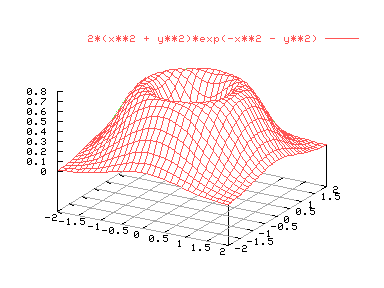
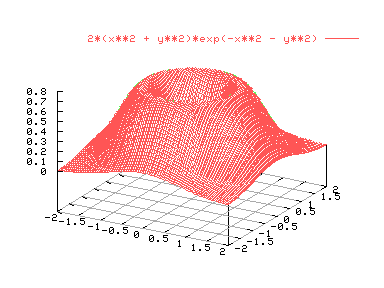

La gráfica anterior da la impresión de ser muy tosca. Para mejorar la apariencia y reducir el aspecto punzante de la gráfica es necesario aumentar la resolución. En las gráficas 2D esto se consigue con el comando "set samples", y para 3D con "set isosamples". Normalmente sólo será necesario aumentar la resolución en gráficos 3D. La sintaxis del comando es:
set isosamples tasa_x, tasa_y
Por defecto ambas tasas tienen valor 10, e indican el tamaño de la rejilla de puntos en la que se evalúa la gráfica. Probemos a aumentar la resolución del gráfico:
set isosamples 30,30
set hidden3d
splot [-2:2] [-2:2] 2*(x**2 + y**2)*exp(-x**2 - y**2)
set isosamples 30,30
replot


Es importante advertir que cuanto mayor sea la resolución del gráfico, más tiempo tardará gnuplot en procesar la gráfica. En general es raro utilizar tasas superiores a 100.